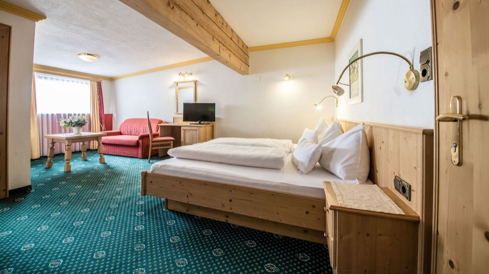
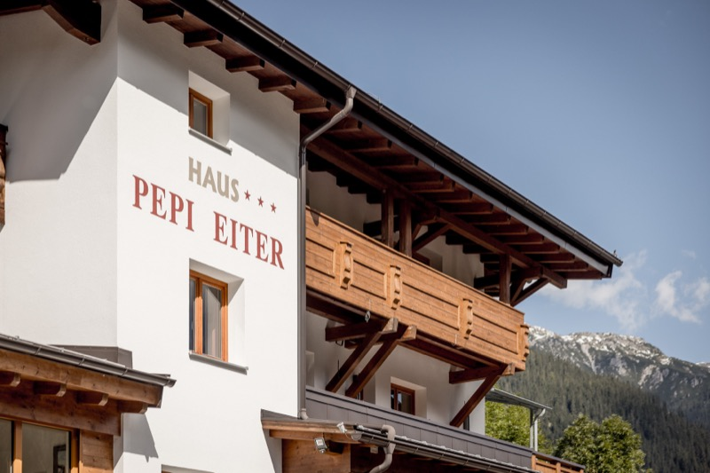
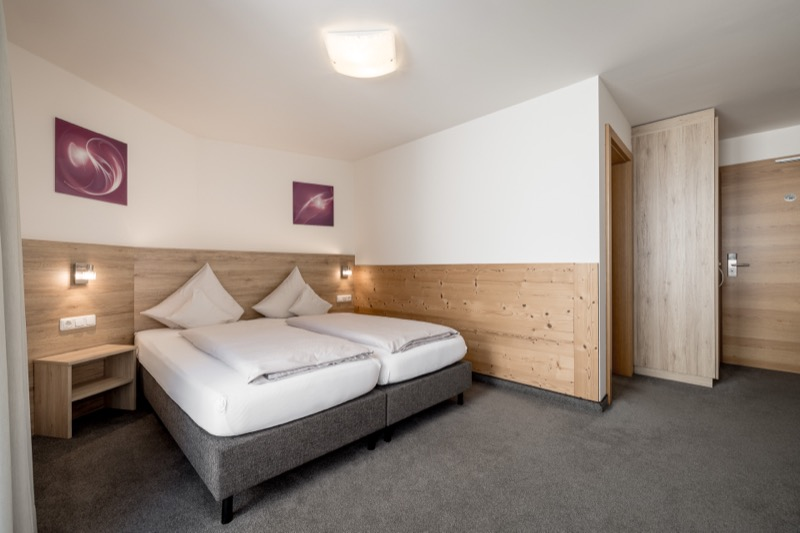
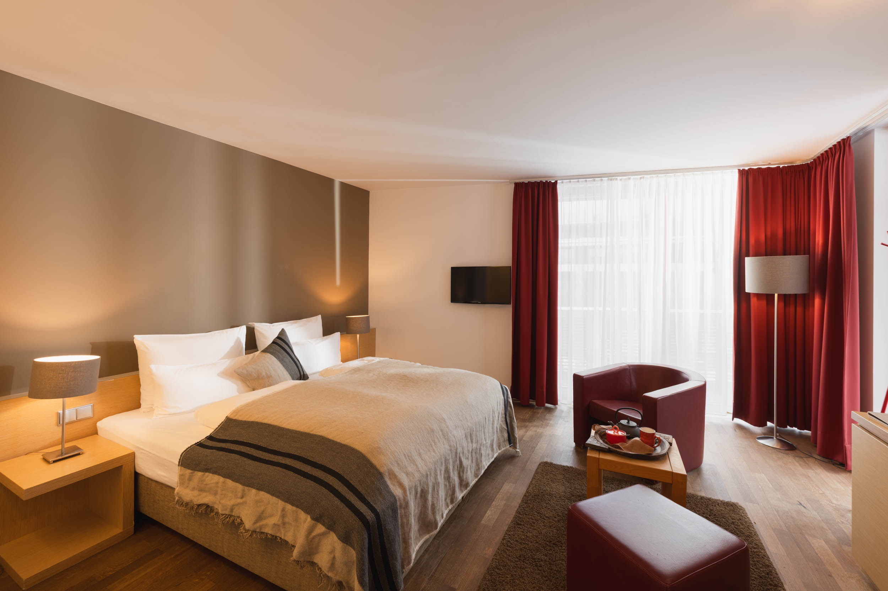
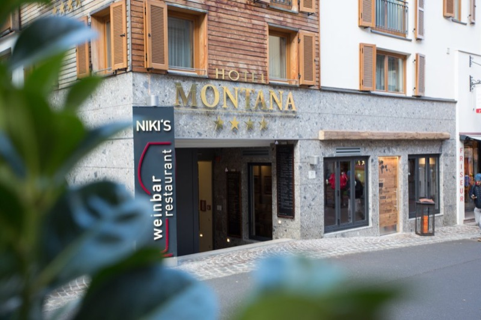
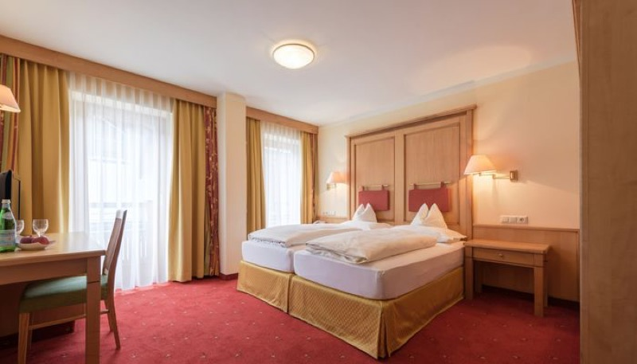
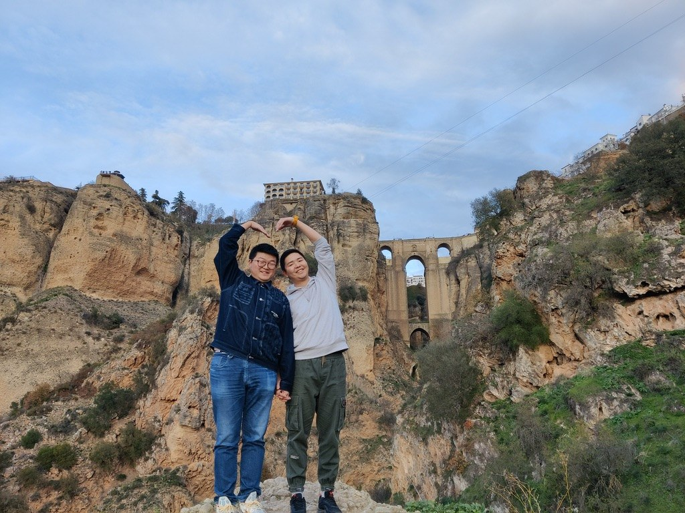
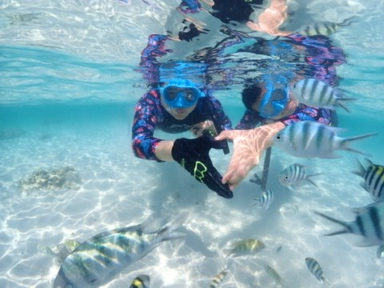
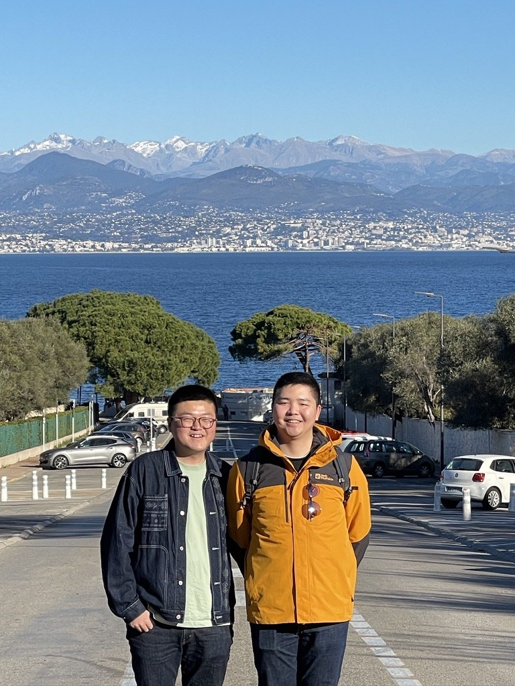
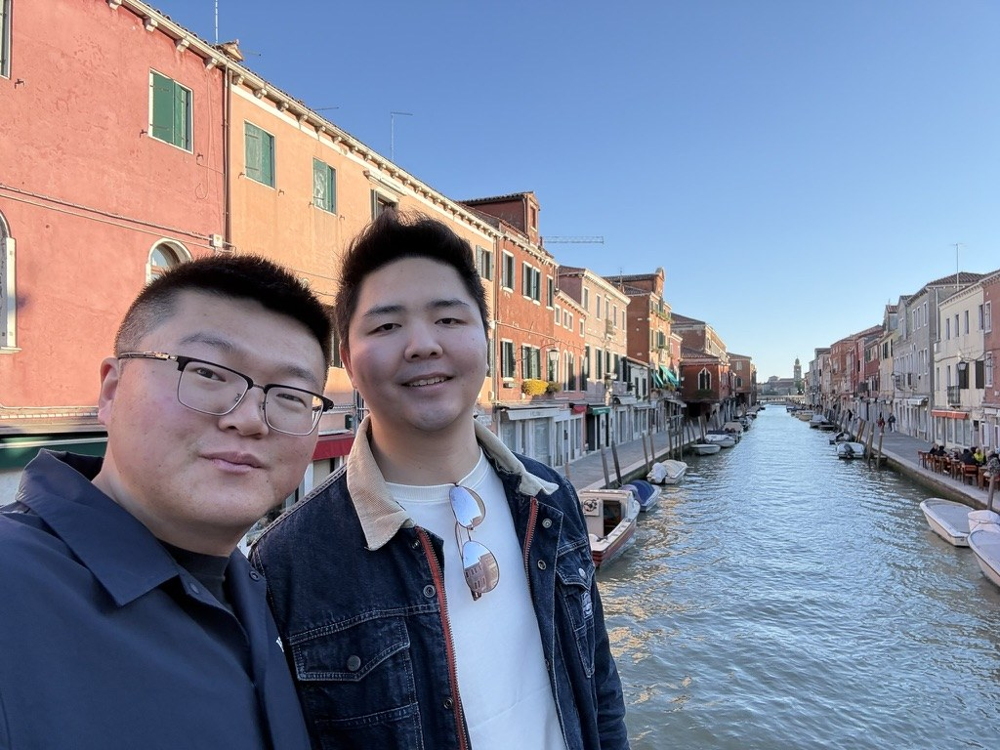

苏黎世机场（ZRH）
到 St. Anton 约 200 公里
- 国际旅客可优先比较苏黎世航班，后续陆路通常比慕尼黑短。
- 从 Zürich HB 有直达火车，车程约 2½–3 小时；机场到主站另计。市区自驾约 2½ 小时。

我们会在奥地利蒂罗尔的 St. Anton am Arlberg 举办婚礼。场地是一座坐落在山坡上的木质历史别墅，里面有滑雪博物馆和餐厅。
Rudi-Matt-Weg 10, 6580 St. Anton am Arlberg, 奥地利
到 St. Anton 约 200 公里
到 St. Anton 约 100 公里
到 St. Anton 约 250 公里
乘火车请选择 St. Anton am Arlberg 站。请结合机票、转车时间和自己的行程决定从哪个机场来。
以下六家均在 St. Anton，按筹备清单列出，排名不分先后。价格为目前收集的参考或酒店询价，订房前请向住宿方确认日期、房量和最终价格。
步行到场地约 9 分钟 · Google 地图 4.5/5（58 条评价） ↗


双人房 €150/晚 · 三人套房 €225/晚
酒店询价记录为 38 个双人房床位加 12 个套房床位，合计约 50 人。双人房间数请以酒店确认为准。
步行到场地约 9 分钟 · Google 地图 4.9/5（62 条评价） ↗


约 €70–100/人/晚
主楼官网列 11 套公寓，每套可住 2–8 人。住宿方估计总体最多约 50–60 人，婚礼周末房量请另询。至少住两晚，价格随房型和入住人数变化。
步行到场地约 6 分钟 · Google 地图 4.8/5（69 条评价） ↗


询价约 €145–160/间
全馆最多约 20 位，有单人、双人和三人房。酒店回复可于周五 6 月 18 日入住，具体房价、晚数和房量请直接确认。
步行到场地约 6 分钟 · Google 地图 4.8/5（106 条评价） ↗


Economy 双人房官网参考约 €118/晚
约 21 间客房。此前收到的含早报价为 €70–80/人/晚。官网预订按两晚查询，如需只住一晚，请直接问酒店确认当晚房价和房量。
步行到场地约 9 分钟 · Google 地图 4.9/5（170 条评价） ↗


双人入住 €140/晚 · 单人入住 €85/晚
询价显示可住一晚或两晚。婚礼周末的可用房量请邮件确认。
步行到场地约 9 分钟 · Google 地图 4.6/5（43 条评价） ↗


婚礼周末房价待确认
酒店共 13 间双人房和套房，可询一晚或两晚。请直接确认房价和可用房量。
这是当天的大致流程，和场地确认后时间可能会略有调整。
一路来到圣安东，终于见面啦！准备好一起玩了吗？
你们都是我们很重要的朋友，我们也想让你们成为朋友。
天气好的话，就请你在山风和草地间，陪我们一起见证这一刻。
倒一杯香槟，接着聊，也趁六月的好阳光拍几张照。
寻常日子尚且离不开美食，何况是我们的婚礼。
也许跳跳舞，也许唱唱歌，也许就天南地北地聊。
谁能拒绝夜里的一块蛋糕呢？给这一天留个甜甜的结尾。
我们一起走过深夜的圣安东，回房前互道晚安。
沿着草地走一走，让山间的小路带你去看看。
如果你会在 St. Anton 多待一会儿，可以自行安排这些活动。出发前请查看开放时间和当天情况。
2022 年 5 月， 我们在慕尼黑奥林匹克塔上一见钟情。 现在回看这张照片，满城春色当然好看， 但我俩当时的皮肤和腰线， 也很值得多看两眼。

2022 年 9 月， 尧第一次去慕尼黑啤酒节。 越也穿上了巴伐利亚传统皮裤， 不过至今也就穿过这么一次。

2022 年 10 月， 国王湖的秋叶正好。 回家没多久， 就添了张双人床。 后来，我们就把纪念日定在了这个十月。

2022 年 11 月， 尧要回美国做博士答辩， 我们想着，接下来也许要分开几个月。 临走前，尧先带越去了自己最爱的巴黎。

2022 年 12 月， 尧告别了美国的博士生活。 和越开启了在中国暴饮暴食的热恋之旅。 福建也太好吃了！ 厦门、泉州、漳州，每天吃到扶墙。

2023 年 1 月， 我们在川西毕棚沟第一次一起看雪。 本来订了温泉酒店，想浪漫地跨个年。 结果两个人都高反，泡汤计划就这么泡汤了。

2023 年 4 月， 在科莫湖，我们误以为意大利菜不过如此。 倒是从这趟起，爱上了欧洲的好山好水， 也爱上了开着车去各种漂亮的小镇。

2023 年 5 月， 尧带越去了美国加州。 在旧金山动了领证的念头。 三年四个月后，在丹麦领了证。
2023 年 5 月， 在乔治城大学庆祝尧博士毕业， 并悄悄拍下了这张照片。 美国的博士生涯刚结束， 慕尼黑的幸福日子早就开始了。
2023 年 5 月， 在纽约唱了卡拉 OK， 还从法拉盛打包了烧腊和肉夹馍。 在回德国的经济舱里， 吃了至今最豪华的一顿飞机餐。

2023 年 8 月， 越带尧见了他在埃尔朗根的朋友。 那也是我俩第一次穿着西装一起参加婚礼。 猜猜看，轮到自己的婚礼，我们还会穿这两套吗？
2023 年 9 月， 我们带美国来的朋友去瑞士，在龙疆湖拍了这张。 比慕尼黑更贵、更干净，也更「山」。 阿尔卑斯的春夏秋冬，哪一季都好看。

2023 年 12 月， 我们开始一起滑雪啦！ Zillertal、Ötztal、Inntal…… 奥地利的一个个山谷，都留下了我俩比翼双飞的滑痕。

2023 年 12 月， 德国的冬天那么长，十二月总得喝杯热红酒。 慕尼黑那几个圣诞市场年年都逛， 这回也去奥格斯堡凑了个热闹。

2023 年 12 月， 在龙达，我们没看斗牛，也用不着私奔。 可这座山崖上的小城，真适合谈恋爱。 野味也很好吃。

2024 年 8 月， 在芭提雅，怕水的尧拉着在海边长大的越， 在浅滩拍下了这张甜甜的浮潜照。 那一会儿，我们也住进了热带鱼儿的彩色世界。

2024 年 8 月， 在清迈，一出门就满头大汗， 也挡不住我们踩着拖鞋，一家家小店吃过去。 至于半天的泰菜课，谁能拒绝呢？ 慕尼黑家里还藏着不少泰国干货， 欢迎来尝尧的炒河粉、越的打抛饭。
2024 年 12 月， 蔚蓝海岸除了尼斯，还有低调又讲究的昂蒂布。 圣诞时的海里没人戏水， 岸边却全是打水漂的好石头，简直是越的圣地。 找准那个经典的浪漫机位，按下快门。 远处那一抹白，不就是阿尔卑斯的雪顶吗？

2025 年 3 月， 奥地利的索尔登贵是贵， 可就冲那大落差，我们年年都想来滑。 累了，或者摔了，就坐在雪上看看风景。 歇一歇，凉快一下，再去套一圈。

2025 年 6 月， 摩德纳和托斯卡纳，让我们对意大利菜改了观。 从此，去哪儿吃得开心，就想跟当地人学做几道。 这次学做意大利面。 尧最爱 Tagliatelle，越最爱 Lasagna。

2025 年 6 月， 夏天的日出早得爬不起来， 可晚上九点多的日落，哪有不看的道理？ 托斯卡纳的田野望不到头。 我们就这么慢悠悠地看完了一场假期日落。

2025 年 12 月， 在 SkiWelt 滑完一天雪，傍晚再坐缆车上山。 逛过那么多圣诞市场，最静的是雪地里的 Ellmau。 灯光微微亮着，只听见脚下的雪嘎吱响，还有我俩的笑声。 也喝到了至今最好喝的热红酒。

2025 年 12 月， 要说蒂罗尔哪个雪场的缆车最纵横交错， 我俩首推 Mayrhofen。 山上山下都有宽宽的蓝道，够我们尽情练活儿。

2025 年 12 月， 过了边境，斯特拉斯堡的树桩蛋糕好吃得很， 热红酒嘛，我们还是投德国一票。 圣诞到新年，和好友在民宿夜夜打牌， 还在欧洲公园见识了天不怕地不怕的越。

2026 年 2 月， 要是一座教堂没能打动越， 那多半是它还不够壮观。 二月的巴塞罗那，圣家堂里的光也这么明媚。 就像我们每次去西班牙度假的心情。

2026 年 2 月， 如果说巴塞罗那是建筑之城， 那瓦伦西亚就是城市公园的殿堂。 租辆单车，或者就凭一双铁腿， 慢慢丈量这座温暖闲适的城市吧。

2026 年 2 月， 差点忘了，瓦伦西亚还有欧洲最大的水族馆。 L’Oceanogràfic。

2026 年 4 月， 我俩平时不太爱凑旅游胜地的热闹。 可要是坐水上出租车去威尼斯的玻璃岛，那就另当别论。 早晚沿着小岛的运河散散步， 主岛嘛，去快闪打个卡就好。

2026 年 8 月， 谢谢广州来的摄影师， 拍下我俩多洛米蒂划船的照片。 Lago di Braies 的木船原始得很， 得有两个帅哥才驾驭得了。

2026 年 8 月， 意大利南蒂罗尔的山峰， 还是比奥地利蒂罗尔的更显峭拔。 回慕尼黑的路上才发现， 我俩早就准备好了，就等对方先提结婚呢。

2026 年 9 月， 我们顺利抢到了丹麦的结婚登记预约， 也很开心，慕尼黑的好友能和我们一起去。 最好的单身派对， 就是和亲友在 Sønderborg 的海边走走，聊聊天。

2026 年 9 月， 我俩穿上帅气的西装，在 Aabenraa 小镇慢慢走。 从这天起，我们要做彼此可以依靠的大人， 也要做对方心里的那个小朋友。

2026 年 9 月， 在 Aabenraa， Yes, of course. Yes, I do. 异想天开的尧和脚踏实地的越， 给了彼此一个家。
2026 年 10 月， 我们开始看婚礼场地了。 想请朋友们来看看我们最喜欢的阿尔卑斯， 第一次来也好，来过很多次也好。 山景好看的地方不少， 最后选了个能让老朋友好好叙旧、新朋友慢慢认识的地方。

2027 年 6 月 19 日（周六），想请你来奥地利圣安东，在蒂罗尔的青山与草地间，和我们一起过一个初夏的好日子，庆祝我们成为彼此的老公。
行程还没定也没关系，先跟我们说说，你有多大可能来、需不需要住宿。之后想再告诉我们新的打算，用同一个邮箱就好。
可将回执滑杆留在 50%（不确定）。
到场时间和仪式安排确认后，会更新到「婚礼流程」。